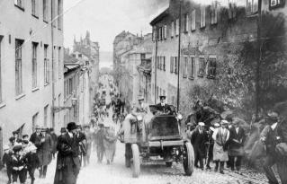
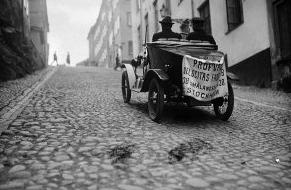
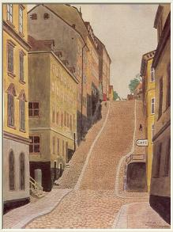

| Vid namnrevisionen 1885 blev Brännkyrkagatan nytt namn för Stora Badstu- och Besvärsgatan. Den östra delen av nuvarande Brännkyrkagatan är sedan början av 1600-talet känd under namnet Bastugatan. År 1706 möter man namnet Besvärsbacken, som ännu lever i folkmun. Det är med all säkerhet den branta backen från Pustegränd uppför Mariaberget som har gett anledning till namnet. Backen upp till Maria Trappgränd är Stockholms brantaste med 21 graders lutning.
BRÄNNKYRKAGATAN,1920-TAL
 |
 Bil på väg uppför Besvärsbacken. Brännkyrkagatan 10-12 till höger. Här ser vi en provkörning i Besvärsbacken. Den är en av stadens brantaste backar, och användes både för att testa blivande bilförares körförmåga och bilarnas kraft. Alexandra Gjestvang, som var Sveriges allra första kvinnliga bilist, klarade t ex sin uppkörning här 1907 genom att visa att hon kunde få stopp på bilen i den branta nerförsbacken. På bilden testas om den fullastade lastbilen skulle kunna orka uppför denna besvärliga backe. |
 Oskar Bergman år 1940. Länge var Brännkyrkagatan den rakaste vägen till Hornstull, men när berget vid Hornskroken sprängdes bort på 1890-talet övertog Hornsgatan rollen som genomfartsled. |